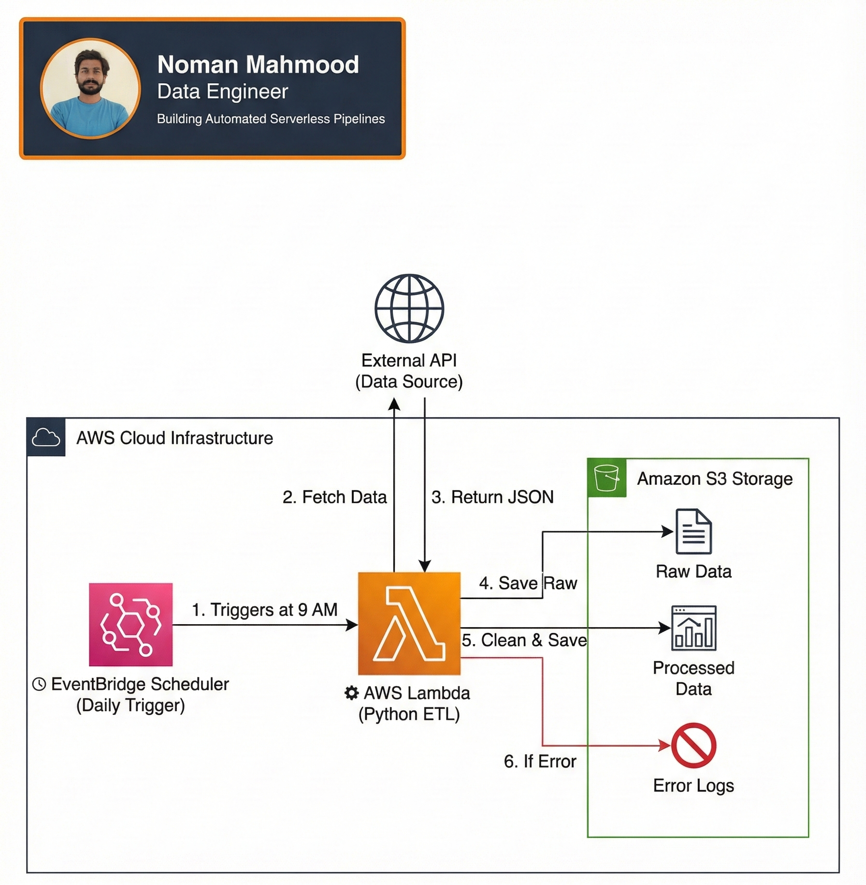

A fully automated, cloud-native data pipeline designed to extract, transform, and load (ETL) data from external APIs into a Data Lake.50k+ events/daily. The entire infrastructure is provisioned using Terraform (IaC), ensuring reproducibility and scalability.The system leverages AWS Lambda for serverless compute and enforces strict data quality checks before storage.
50k
Events / Daily
200ms
Latency
99.9%
Uptime

Deployed on AWS
Manual data extraction scripts are prone to errors, difficult to scale, and require constant maintenance. Furthermore, manually configuring cloud resources ("ClickOps") leads to inconsistent environments and security risks. I needed a solution that
Zero-Maintenance: No servers to manage.
Reliable: Runs automatically on a schedule.
Scalable: Can handle increased data volume without crashing.
I engineered an event-driven architecture using AWS Serverless services:
How data travels from edge sensors to the analytics dashboard.
EventBridge
Scheduled daily workflow at 9:00 AM UTC.
Lambda + API
Fetches raw JSON from external API.
S3 Raw
Raw JSON stored for backup & idempotency.
Pydantic
Schema validation & quarantine on failure.
Pandas
Flattening, casting & business rules.
S3 Processed
Clean CSV ready for analytics.
The core logic resides in the StreamHandler class.
It manages the Spark session and defines the transformation logic.
Used Broadcasting for the sensor metadata lookup to avoid expensive shuffles across the network.
Schema enforcement on read ensures that corrupt JSON packets don't crash the stream.
# Entry point for AWS Lambda-based ETL Pipeline import sys import os import json from datetime import datetime from utils.logger import get_logger # Importing pipeline modules from src.ingestion.product_api import extract_product_data from src.transformation.validator import validate_product_dataset from src.transformation.transformation import process_validated_data from src.load.load_data import save_data # Load environment variables (local support) try: from dotenv import load_dotenv load_dotenv() except ImportError: pass # Logger setup logger = get_logger("MAIN_PIPELINE", "main_pipeline") def run_pipeline(event=None, context=None): logger.info("--- Pipeline Started ---") try: # STEP 1: Extraction (Raw Layer) logger.info("Extracting data from external API...") raw_data = extract_product_data() if not raw_data: logger.critical("No data extracted. Exiting.") return raw_path = save_data(raw_data, "raw", "products_raw", "json") logger.info(f"Raw data saved at: {raw_path}") # STEP 2: Validation (Quality Gate) products = raw_data.get("products", []) valid_records, invalid_records = validate_product_dataset(products) logger.info( f"Validation Results | Passed={len(valid_records)} | Failed={len(invalid_records)}" ) # Save invalid records to Quarantine if invalid_records: quarantine_path = save_data( invalid_records, "quarantine", "quarantine_errors", "json" ) logger.warning(f"Invalid records moved to: {quarantine_path}") if not valid_records: logger.error("No valid records to process. Stopping.") return # STEP 3: Transformation logger.info("Transforming validated data...") transformed_df = process_validated_data(valid_records) logger.info(f"Transformed data shape: {transformed_df.shape}") # STEP 4: Load (Processed Layer) processed_path = save_data( transformed_df, "processed", "clean_products", "csv" ) logger.info(f"Processed data saved at: {processed_path}") logger.info("--- Pipeline Finished Successfully ---") except Exception as e: logger.critical(f"Pipeline crashed: {e}") if __name__ == "__main__": run_pipeline()